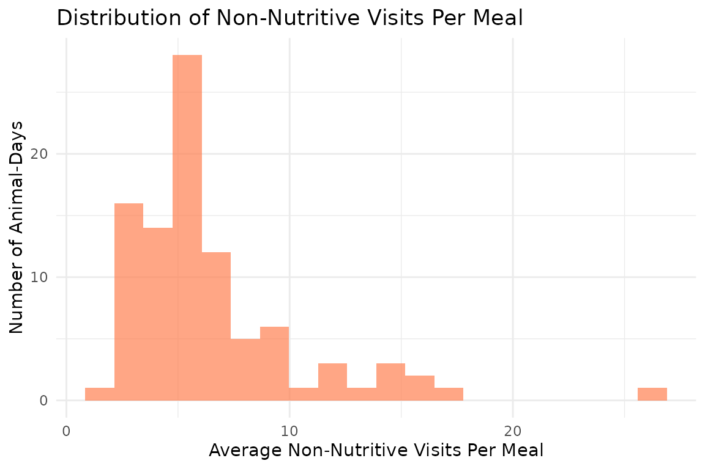
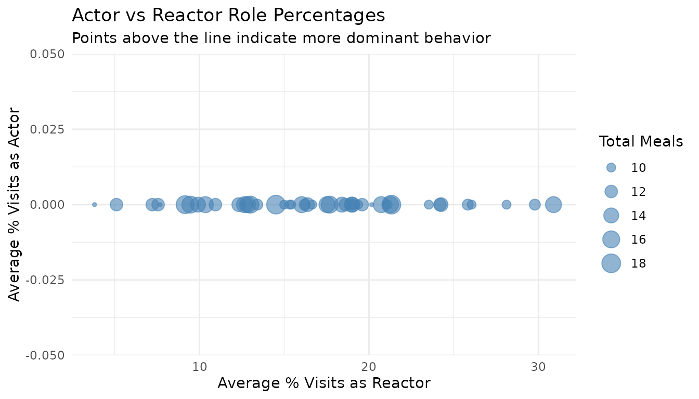

8. Meal-Level Behavior Analysis
Source:vignettes/meal_behavior_analysis.Rmd
meal_behavior_analysis.Rmd1. Set Your Global Variables First!
Before analyzing meal-level behavior patterns, configure global variables to match your data structure:
# Configure global variables for your data structure
set_global_cols(
id_col = "cow", # Animal ID column name
start_col = "start", # Visit start time column
end_col = "end", # Visit end time column
bin_col = "bin", # Bin/feeder ID column
intake_col = "intake", # Feed intake amount column
dur_col = "duration", # Visit duration column
tz = "America/Vancouver" # Your timezone
)2. Introduction to Meal-Level Behavior Analysis
While individual visits provide granular data, analyzing behavior within meals offers deeper insights into feeding patterns. A meal consists of multiple related visits clustered together in time, and examining what happens during a meal can reveal important behavioral patterns.
This tutorial demonstrates how to:
- Analyze non-nutritive visits within meals - Identify exploratory behavior during feeding
- Examine actor/reactor roles within meals - Understand social dynamics during meals
- Summarize meal-level behavior patterns - Aggregate findings per animal per day
3. Prerequisites
This tutorial requires:
- Completion of Tutorial 1: Data Cleaning
- Completion of Tutorial 2: Meal Clustering - your data must have meal labels
- For actor/reactor analysis: Tutorial 4: Replacement Detection
4. Data Preparation
First, we need to prepare meal-labeled data:
# Load cleaned example data
data(clean_feed)
data(clean_comb)
# If you're using your own data from previous tutorials, use this instead:
# clean_feed <- your_cleaned_feed_data
# clean_comb <- your_cleaned_comb_data
# Label visits with meal assignments
# (See Tutorial 2: Meal Clustering for details on parameter selection)
labeled_visits <- meal_label_visits(
data = clean_feed,
eps = NULL, # Auto-determine optimal interval
min_pts = 2, # Minimum visits to form a meal
method = "gmm", # Use GMM for interval detection
eps_scope = "all_animals",
lower_bound = NULL,
upper_bound = NULL,
use_log_transform = TRUE,
log_multiplier = 20,
log_offset = 1
)
# Quick peek at meal-labeled data
cat("Meal-labeled data structure (first day):\n")
#> Meal-labeled data structure (first day):
head(labeled_visits[[1]][, c("cow", "bin", "start", "intake", "meal_id", "meal_start")])
#> # A tibble: 6 × 6
#> cow bin start intake meal_id meal_start
#> <int> <dbl> <dttm> <dbl> <int> <dttm>
#> 1 6020 1 2020-10-31 00:26:12 0.200 1 2020-10-31 00:14:05
#> 2 4044 1 2020-10-31 01:17:43 0.9 1 2020-10-31 01:13:00
#> 3 4072 1 2020-10-31 01:37:30 0.100 1 2020-10-31 01:08:35
#> 4 5124 1 2020-10-31 06:05:49 0.400 1 2020-10-31 06:04:40
#> 5 6020 1 2020-10-31 06:08:02 0.600 2 2020-10-31 06:05:24
#> 6 6069 1 2020-10-31 06:09:55 0.800 1 2020-10-31 06:05:16
cat("\nTotal meals identified on first day:", max(labeled_visits[[1]]$meal_id), "\n")
#>
#> Total meals identified on first day: 95. Non-Nutritive Visits Within Meals
Non-nutritive visits (visits where animals don’t consume feed despite it being available) and empty bin visits (visits to bins with no feed) can occur during meals. Analyzing these patterns within meal contexts provides insights into exploratory behavior.
Understanding Visit Types Within Meals
The meal_non_nutritive_summary() function classifies
each visit within a meal as:
- Nutritive: Animal consumed feed (intake > calibration error)
- Non-nutritive: Feed available but animal didn’t eat (exploratory)
- Empty bin: No feed available in the bin
Analyze Non-Nutritive Patterns
# Create quality control configuration
my_qc_config <- qc_config(
calibration_error = 0.5 # Equipment measurement threshold (kg)
)
# Analyze non-nutritive and empty bin visits within meals
meal_visits <- meal_non_nutritive_summary(
data = labeled_visits,
cfg = my_qc_config
)
# Examine the results from first day
cat("Meal visit analysis (first day):\n")
#> Meal visit analysis (first day):
head(meal_visits[[1]])
#> date cow mean_non_nutritive_per_meal median_non_nutritive_per_meal
#> 1 2020-10-31 2074 3.800000 2.0
#> 2 2020-10-31 3150 2.571429 2.0
#> 3 2020-10-31 4001 2.833333 2.5
#> 4 2020-10-31 4044 6.000000 6.0
#> 5 2020-10-31 4070 2.571429 0.0
#> 6 2020-10-31 4072 5.375000 5.5
#> sd_non_nutritive_per_meal mean_empty_bin_per_meal median_empty_bin_per_meal
#> 1 2.949576 0.0000000 0
#> 2 2.439750 0.0000000 0
#> 3 2.316607 0.0000000 0
#> 4 3.000000 0.0000000 0
#> 5 3.359422 0.4285714 0
#> 6 2.924649 0.1250000 0
#> sd_empty_bin_per_meal total_non_nutritive_visits total_empty_bin_visits
#> 1 0.0000000 19 0
#> 2 0.0000000 18 0
#> 3 0.0000000 17 0
#> 4 0.0000000 30 0
#> 5 1.1338934 18 3
#> 6 0.3535534 43 1
#> total_meals
#> 1 5
#> 2 7
#> 3 6
#> 4 5
#> 5 7
#> 6 8The summary provides per animal per day:
-
mean_non_nutritive_per_meal: Average non-nutritive visits per meal -
median_non_nutritive_per_meal: Median non-nutritive visits per meal -
sd_non_nutritive_per_meal: Standard deviation -
mean_empty_bin_per_meal: Average empty bin visits per meal -
median_empty_bin_per_meal: Median empty bin visits per meal -
sd_empty_bin_per_meal: Standard deviation -
total_non_nutritive_visits: Total count of non-nutritive visits -
total_empty_bin_visits: Total count of empty bin visits -
total_meals: Number of meals analyzed
Identify Animals with High Exploratory Behavior
# Combine all days
all_meal_visits <- do.call(rbind, meal_visits)
# Find animals with highest non-nutritive visits per meal
high_exploratory <- all_meal_visits |>
dplyr::group_by(cow) |>
dplyr::summarise(
avg_non_nutritive = mean(mean_non_nutritive_per_meal, na.rm = TRUE),
avg_empty_bin = mean(mean_empty_bin_per_meal, na.rm = TRUE),
total_meals = sum(total_meals),
.groups = "drop"
) |>
dplyr::arrange(desc(avg_non_nutritive))
cat("Animals with most non-nutritive visits per meal:\n")
#> Animals with most non-nutritive visits per meal:
head(high_exploratory, 5)
#> # A tibble: 5 × 4
#> cow avg_non_nutritive avg_empty_bin total_meals
#> <int> <dbl> <dbl> <int>
#> 1 7030 20.5 0 11
#> 2 5042 16.3 0 10
#> 3 7027 14.1 0.0556 17
#> 4 6027 13.5 0.125 9
#> 5 6055 11.7 0.5 12
cat("\nAnimals with most empty bin visits per meal:\n")
#>
#> Animals with most empty bin visits per meal:
high_exploratory |>
dplyr::arrange(desc(avg_empty_bin)) |>
head(5)
#> # A tibble: 5 × 4
#> cow avg_non_nutritive avg_empty_bin total_meals
#> <int> <dbl> <dbl> <int>
#> 1 5137 6.04 1.46 10
#> 2 5067 3.77 1.37 15
#> 3 5124 7.64 1.11 14
#> 4 6005 5.33 0.833 12
#> 5 5028 3.25 0.75 10Visualize Non-Nutritive Patterns
# Distribution of non-nutritive visits per meal
ggplot(all_meal_visits, aes(x = mean_non_nutritive_per_meal)) +
geom_histogram(bins = 20, fill = "coral", alpha = 0.7) +
labs(
title = "Distribution of Non-Nutritive Visits Per Meal",
x = "Average Non-Nutritive Visits Per Meal",
y = "Number of Animal-Days"
) +
theme_minimal()
6. Actor/Reactor Roles Within Meals
When we combine meal data with replacement events, we can analyze the social roles animals play during their meals. An animal might enter a visit as an “actor” (replacing another animal) or leave as a “reactor” (being replaced by another animal).
Understanding Actor/Reactor Roles
- Actor: The animal entered this visit by replacing another animal at the bin
- Reactor: The animal was replaced by another animal when leaving this visit
- Actor-Reactor: Both events occurred during the same visit (rare but possible)
Prepare Replacement Data
# Detect replacement events
# (See Tutorial 4: Replacement Detection for details)
replacements <- record_replacement_days(
comb = clean_comb,
cfg = qc_config(replacement_threshold = 26)
)
cat("Replacement events per day:\n")
#> Replacement events per day:
sapply(replacements, nrow)
#> 2020-10-31 2020-11-01
#> 655 709Analyze Actor/Reactor Roles Within Meals
We need meal-labeled data that matches the combined feed/water data used for replacement detection:
# Label the combined data with meals
labeled_comb <- meal_label_visits(
data = clean_comb,
eps = NULL,
min_pts = 2,
method = "gmm",
eps_scope = "all_animals",
lower_bound = NULL,
upper_bound = NULL,
use_log_transform = TRUE,
log_multiplier = 20,
log_offset = 1
)
# Analyze actor/reactor roles within meals
meal_roles <- meal_replacement_roles(
visit_data = labeled_comb,
replacement_data = replacements,
time_tolerance = 1 # Seconds tolerance for matching
)
# Examine the meal-level results
cat("Actor/reactor roles per meal (first day):\n")
#> Actor/reactor roles per meal (first day):
head(meal_roles[[1]])
#> date cow meal_id total_visits_in_meal actor_visits reactor_visits
#> 1 2020-10-31 2074 1 8 0 2
#> 2 2020-10-31 2074 2 18 0 2
#> 3 2020-10-31 2074 3 7 0 4
#> 4 2020-10-31 2074 4 12 0 2
#> 5 2020-10-31 2074 5 4 0 0
#> 6 2020-10-31 2074 6 4 0 1
#> actor_reactor_visits pct_actor pct_reactor pct_actor_reactor
#> 1 0 0 25.00000 0
#> 2 0 0 11.11111 0
#> 3 0 0 57.14286 0
#> 4 0 0 16.66667 0
#> 5 0 0 0.00000 0
#> 6 0 0 25.00000 0The results show for each animal’s meal:
-
total_visits_in_meal: Total visits in the meal -
actor_visits: Visits where animal entered as actor -
reactor_visits: Visits where animal left as reactor -
actor_reactor_visits: Visits with both roles -
pct_actor: Percentage of visits as actor -
pct_reactor: Percentage of visits as reactor -
pct_actor_reactor: Percentage with both roles
Summarize Roles Per Animal Per Day
# Get daily summary statistics across all meals
daily_roles <- meal_replacement_roles_summary(meal_roles)
cat("Daily role summary (first day):\n")
#> Daily role summary (first day):
print(daily_roles[[1]])
#> date cow mean_pct_actor median_pct_actor sd_pct_actor
#> 1 2020-10-31 2074 0 0 0
#> 2 2020-10-31 3150 0 0 0
#> 3 2020-10-31 4001 0 0 0
#> 4 2020-10-31 4044 0 0 0
#> 5 2020-10-31 4070 0 0 0
#> 6 2020-10-31 4072 0 0 0
#> 7 2020-10-31 4080 0 0 0
#> 8 2020-10-31 5028 0 0 0
#> 9 2020-10-31 5041 0 0 0
#> 10 2020-10-31 5042 0 0 0
#> 11 2020-10-31 5058 0 0 0
#> 12 2020-10-31 5061 0 0 0
#> 13 2020-10-31 5067 0 0 0
#> 14 2020-10-31 5100 0 0 0
#> 15 2020-10-31 5114 0 0 0
#> 16 2020-10-31 5120 0 0 0
#> 17 2020-10-31 5123 0 0 0
#> 18 2020-10-31 5124 0 0 0
#> 19 2020-10-31 5135 0 0 0
#> 20 2020-10-31 5137 0 0 0
#> 21 2020-10-31 5139 0 0 0
#> 22 2020-10-31 5145 0 0 0
#> 23 2020-10-31 6005 0 0 0
#> 24 2020-10-31 6020 0 0 0
#> 25 2020-10-31 6027 0 0 0
#> 26 2020-10-31 6028 0 0 0
#> 27 2020-10-31 6030 0 0 0
#> 28 2020-10-31 6033 0 0 0
#> 29 2020-10-31 6042 0 0 0
#> 30 2020-10-31 6050 0 0 0
#> 31 2020-10-31 6055 0 0 0
#> 32 2020-10-31 6069 0 0 0
#> 33 2020-10-31 6084 0 0 0
#> 34 2020-10-31 6090 0 0 0
#> 35 2020-10-31 6121 0 0 0
#> 36 2020-10-31 6126 0 0 0
#> 37 2020-10-31 6129 0 0 0
#> 38 2020-10-31 7010 0 0 0
#> 39 2020-10-31 7018 0 0 0
#> 40 2020-10-31 7019 0 0 0
#> 41 2020-10-31 7022 0 0 0
#> 42 2020-10-31 7023 0 0 0
#> 43 2020-10-31 7024 0 0 0
#> 44 2020-10-31 7027 0 0 0
#> 45 2020-10-31 7030 0 0 0
#> 46 2020-10-31 7033 0 0 0
#> 47 2020-10-31 7043 0 0 0
#> mean_pct_reactor median_pct_reactor sd_pct_reactor mean_pct_actor_reactor
#> 1 22.486772 20.833333 19.404180 0
#> 2 19.702381 20.000000 21.970818 0
#> 3 5.769231 0.000000 14.131672 0
#> 4 15.107660 8.333333 15.859523 0
#> 5 14.345212 8.333333 17.196570 0
#> 6 19.057861 21.637427 10.009381 0
#> 7 12.892416 14.285714 9.754975 0
#> 8 35.833333 30.000000 21.666667 0
#> 9 6.584416 0.000000 9.558268 0
#> 10 12.813524 7.692308 11.583569 0
#> 11 12.142857 15.000000 12.791573 0
#> 12 9.833377 0.000000 15.105378 0
#> 13 4.388375 0.000000 5.648305 0
#> 14 9.865591 11.111111 9.152691 0
#> 15 21.369048 23.809524 20.259792 0
#> 16 4.790823 0.000000 8.540175 0
#> 17 21.142589 15.773810 22.267125 0
#> 18 21.333333 16.666667 16.890168 0
#> 19 9.545455 9.090909 11.047107 0
#> 20 22.600733 14.285714 24.850230 0
#> 21 15.714286 7.142857 20.603150 0
#> 22 21.211450 12.903226 22.428807 0
#> 23 18.024734 20.714286 9.238658 0
#> 24 22.995805 20.000000 18.183889 0
#> 25 6.922043 4.166667 9.172341 0
#> 26 23.577264 11.111111 22.854105 0
#> 27 11.011905 2.380952 17.354023 0
#> 28 16.467846 18.181818 8.056472 0
#> 29 18.904762 9.523810 18.149668 0
#> 30 15.654135 20.000000 15.742178 0
#> 31 12.005046 7.916667 14.384608 0
#> 32 16.980373 5.405405 24.937729 0
#> 33 20.988132 15.789474 10.862766 0
#> 34 19.671026 17.647059 17.187854 0
#> 35 11.332315 7.142857 11.505065 0
#> 36 12.966721 10.795455 12.825538 0
#> 37 20.444444 20.000000 18.734665 0
#> 38 15.470178 10.101010 17.570823 0
#> 39 26.589556 22.619048 20.134313 0
#> 40 9.023920 7.812500 9.984882 0
#> 41 25.227273 20.454545 25.296981 0
#> 42 14.813105 9.523810 15.840853 0
#> 43 13.926644 15.109890 11.000924 0
#> 44 13.658677 10.204082 15.906108 0
#> 45 16.019187 16.413374 16.171367 0
#> 46 14.783249 15.151515 11.450989 0
#> 47 31.483516 28.571429 17.835574 0
#> median_pct_actor_reactor sd_pct_actor_reactor total_meals
#> 1 0 0 6
#> 2 0 0 9
#> 3 0 0 6
#> 4 0 0 5
#> 5 0 0 7
#> 6 0 0 8
#> 7 0 0 9
#> 8 0 0 4
#> 9 0 0 7
#> 10 0 0 5
#> 11 0 0 7
#> 12 0 0 9
#> 13 0 0 7
#> 14 0 0 7
#> 15 0 0 8
#> 16 0 0 6
#> 17 0 0 6
#> 18 0 0 5
#> 19 0 0 4
#> 20 0 0 5
#> 21 0 0 6
#> 22 0 0 7
#> 23 0 0 6
#> 24 0 0 7
#> 25 0 0 4
#> 26 0 0 5
#> 27 0 0 8
#> 28 0 0 3
#> 29 0 0 5
#> 30 0 0 5
#> 31 0 0 6
#> 32 0 0 6
#> 33 0 0 7
#> 34 0 0 7
#> 35 0 0 5
#> 36 0 0 8
#> 37 0 0 5
#> 38 0 0 6
#> 39 0 0 6
#> 40 0 0 6
#> 41 0 0 4
#> 42 0 0 7
#> 43 0 0 6
#> 44 0 0 9
#> 45 0 0 4
#> 46 0 0 8
#> 47 0 0 5The daily summary provides:
-
mean_pct_actor: Average percentage of actor visits across meals -
median_pct_actor: Median percentage -
sd_pct_actor: Standard deviation - Similarly for reactor and actor-reactor roles
-
total_meals: Number of meals analyzed
Identify Dominant and Subordinate Animals
# Combine all daily summaries
all_daily_roles <- do.call(rbind, daily_roles)
# Find animals with highest actor percentages (potentially dominant)
dominant_animals <- all_daily_roles |>
dplyr::group_by(cow) |>
dplyr::summarise(
avg_pct_actor = mean(mean_pct_actor, na.rm = TRUE),
avg_pct_reactor = mean(mean_pct_reactor, na.rm = TRUE),
total_meals = sum(total_meals),
.groups = "drop"
) |>
dplyr::mutate(
dominance_ratio = avg_pct_actor / (avg_pct_reactor + 0.01) # Avoid division by zero
) |>
dplyr::arrange(desc(dominance_ratio))
cat("Animals with highest actor-to-reactor ratio (potentially dominant):\n")
#> Animals with highest actor-to-reactor ratio (potentially dominant):
head(dominant_animals, 5)
#> # A tibble: 5 × 5
#> cow avg_pct_actor avg_pct_reactor total_meals dominance_ratio
#> <int> <dbl> <dbl> <int> <dbl>
#> 1 2074 0 19.0 11 0
#> 2 3150 0 21.3 18 0
#> 3 4001 0 3.81 9 0
#> 4 4044 0 15.3 10 0
#> 5 4070 0 19.0 10 0
cat("\nAnimals with lowest actor-to-reactor ratio (potentially subordinate):\n")
#>
#> Animals with lowest actor-to-reactor ratio (potentially subordinate):
tail(dominant_animals, 5)
#> # A tibble: 5 × 5
#> cow avg_pct_actor avg_pct_reactor total_meals dominance_ratio
#> <int> <dbl> <dbl> <int> <dbl>
#> 1 7024 0 20.7 15 0
#> 2 7027 0 14.5 18 0
#> 3 7030 0 13.4 11 0
#> 4 7033 0 18.4 14 0
#> 5 7043 0 29.8 11 0Visualize Role Patterns
# Scatter plot: Actor vs Reactor percentages
ggplot(dominant_animals, aes(x = avg_pct_reactor, y = avg_pct_actor)) +
geom_point(aes(size = total_meals), alpha = 0.6, color = "steelblue") +
geom_abline(slope = 1, intercept = 0, linetype = "dashed", color = "gray50") +
labs(
title = "Actor vs Reactor Role Percentages",
subtitle = "Points above the line indicate more dominant behavior",
x = "Average % Visits as Reactor",
y = "Average % Visits as Actor",
size = "Total Meals"
) +
theme_minimal()
7. Combining Meal-Level Insights
By combining non-nutritive visit analysis with actor/reactor roles, we can build a comprehensive picture of each animal’s meal behavior:
# Merge the summaries for a combined view
combined_behavior <- dominant_animals |>
dplyr::left_join(
high_exploratory |> dplyr::select(cow, avg_non_nutritive, avg_empty_bin),
by = "cow"
)
cat("Combined meal behavior profile:\n")
#> Combined meal behavior profile:
head(combined_behavior)
#> # A tibble: 6 × 7
#> cow avg_pct_actor avg_pct_reactor total_meals dominance_ratio
#> <int> <dbl> <dbl> <int> <dbl>
#> 1 2074 0 19.0 11 0
#> 2 3150 0 21.3 18 0
#> 3 4001 0 3.81 9 0
#> 4 4044 0 15.3 10 0
#> 5 4070 0 19.0 10 0
#> 6 4072 0 17.5 15 0
#> # ℹ 2 more variables: avg_non_nutritive <dbl>, avg_empty_bin <dbl>8. Summary
This tutorial demonstrated meal-level behavior analysis:
- Non-nutritive visits within meals: Identified exploratory behavior patterns
- Actor/reactor roles: Analyzed social dynamics during meals
- Daily summaries: Aggregated behavior metrics per animal per day
- Behavioral profiles: Combined multiple metrics to characterize animals
These metrics can help identify animals that may be: - Highly exploratory: Many non-nutritive visits per meal - Competitively disadvantaged: Many empty bin visits, high reactor percentage - Socially dominant: High actor-to-reactor ratio
9. Code Cheatsheet
#' Copy and modify these code blocks for your own analysis!
# ---- SETUP: Global Variables (REQUIRED FIRST!) ----
library(moo4feed)
library(ggplot2)
library(dplyr)
# Set up your column names and timezone (modify these!)
set_global_cols(
id_col = "cow", # Your animal ID column
start_col = "start", # Visit start time column
end_col = "end", # Visit end time column
bin_col = "bin", # Bin/feeder ID column
intake_col = "intake", # Feed intake amount column
dur_col = "duration", # Visit duration column
tz = "America/Vancouver" # Your timezone
)
# ---- STEP 1: Prepare Meal-Labeled Data ----
# Load your cleaned data
data(clean_feed)
data(clean_comb)
# Label visits with meals (see Tutorial 2 for details)
labeled_visits <- meal_label_visits(
data = clean_feed,
eps = NULL, # Auto-determine
min_pts = 2,
method = "gmm",
eps_scope = "all_animals",
use_log_transform = TRUE,
log_multiplier = 20,
log_offset = 1
)
# ---- STEP 2: Analyze Non-Nutritive Visits Within Meals ----
my_qc_config <- qc_config(calibration_error = 0.5)
meal_visits <- meal_non_nutritive_summary(
data = labeled_visits,
cfg = my_qc_config
)
# View results
head(meal_visits[[1]])
# Combine all days
all_meal_visits <- do.call(rbind, meal_visits)
# Find animals with high exploratory behavior
high_exploratory <- all_meal_visits |>
dplyr::group_by(cow) |>
dplyr::summarise(
avg_non_nutritive = mean(mean_non_nutritive_per_meal, na.rm = TRUE),
avg_empty_bin = mean(mean_empty_bin_per_meal, na.rm = TRUE),
.groups = "drop"
) |>
dplyr::arrange(desc(avg_non_nutritive))
print(high_exploratory)
# ---- STEP 3: Analyze Actor/Reactor Roles Within Meals ----
# First, detect replacement events (see Tutorial 4)
replacements <- record_replacement_days(
comb = clean_comb,
cfg = qc_config(replacement_threshold = 26)
)
# Label combined data with meals
labeled_comb <- meal_label_visits(
data = clean_comb,
eps = NULL,
min_pts = 2,
method = "gmm",
eps_scope = "all_animals"
)
# Analyze roles within meals
meal_roles <- meal_replacement_roles(
visit_data = labeled_comb,
replacement_data = replacements,
time_tolerance = 1
)
# View meal-level results
head(meal_roles[[1]])
# ---- STEP 4: Get Daily Role Summaries ----
daily_roles <- meal_replacement_roles_summary(meal_roles)
# View daily summaries
print(daily_roles[[1]])
# Combine all days
all_daily_roles <- do.call(rbind, daily_roles)
# Find dominant/subordinate animals
dominance_summary <- all_daily_roles |>
dplyr::group_by(cow) |>
dplyr::summarise(
avg_pct_actor = mean(mean_pct_actor, na.rm = TRUE),
avg_pct_reactor = mean(mean_pct_reactor, na.rm = TRUE),
total_meals = sum(total_meals),
.groups = "drop"
) |>
dplyr::mutate(
dominance_ratio = avg_pct_actor / (avg_pct_reactor + 0.01)
) |>
dplyr::arrange(desc(dominance_ratio))
print(dominance_summary)
# ---- STEP 5: Visualize Results ----
# Distribution of non-nutritive visits
ggplot(all_meal_visits, aes(x = mean_non_nutritive_per_meal)) +
geom_histogram(bins = 20, fill = "coral", alpha = 0.7) +
theme_minimal()
# Actor vs Reactor scatter plot
ggplot(dominance_summary, aes(x = avg_pct_reactor, y = avg_pct_actor)) +
geom_point(aes(size = total_meals), alpha = 0.6) +
geom_abline(slope = 1, intercept = 0, linetype = "dashed") +
theme_minimal()